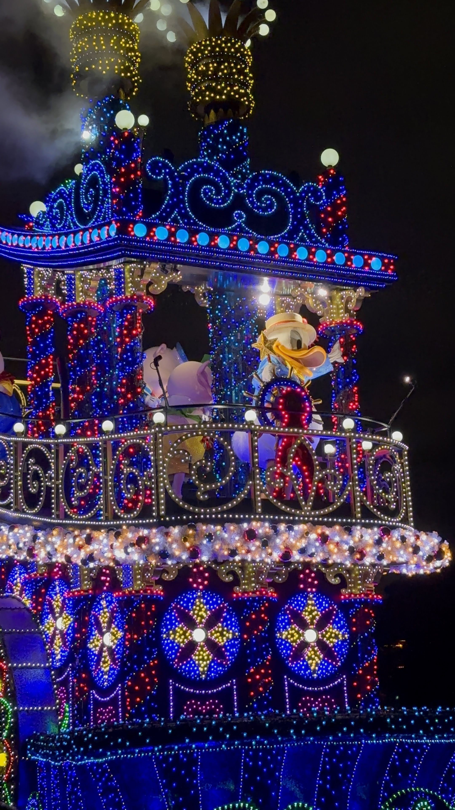
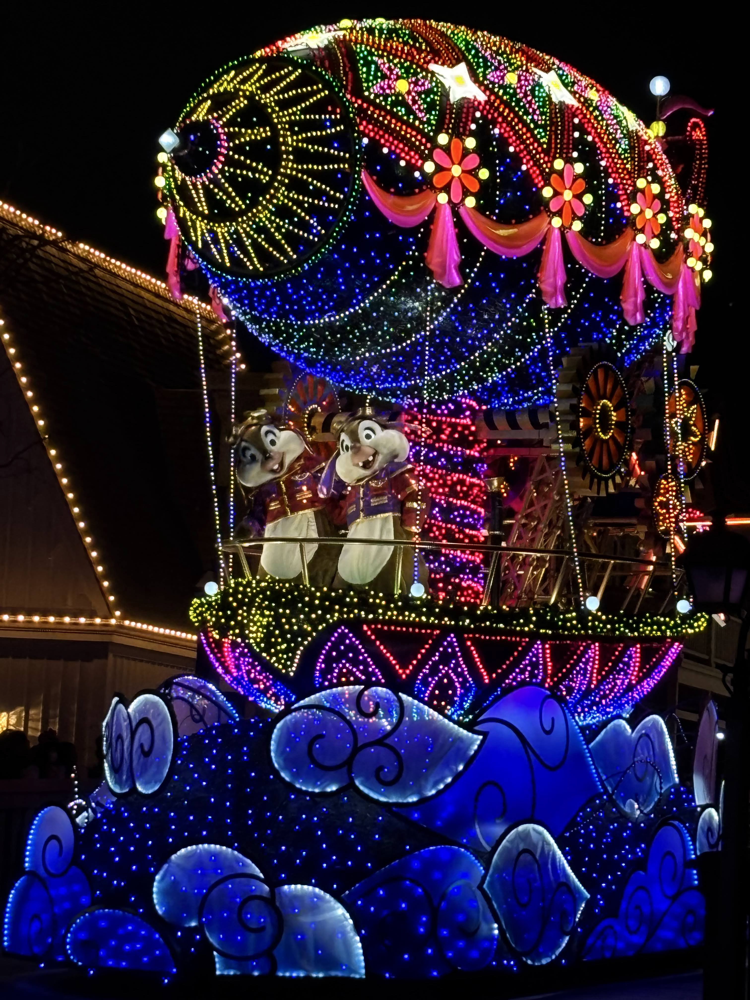
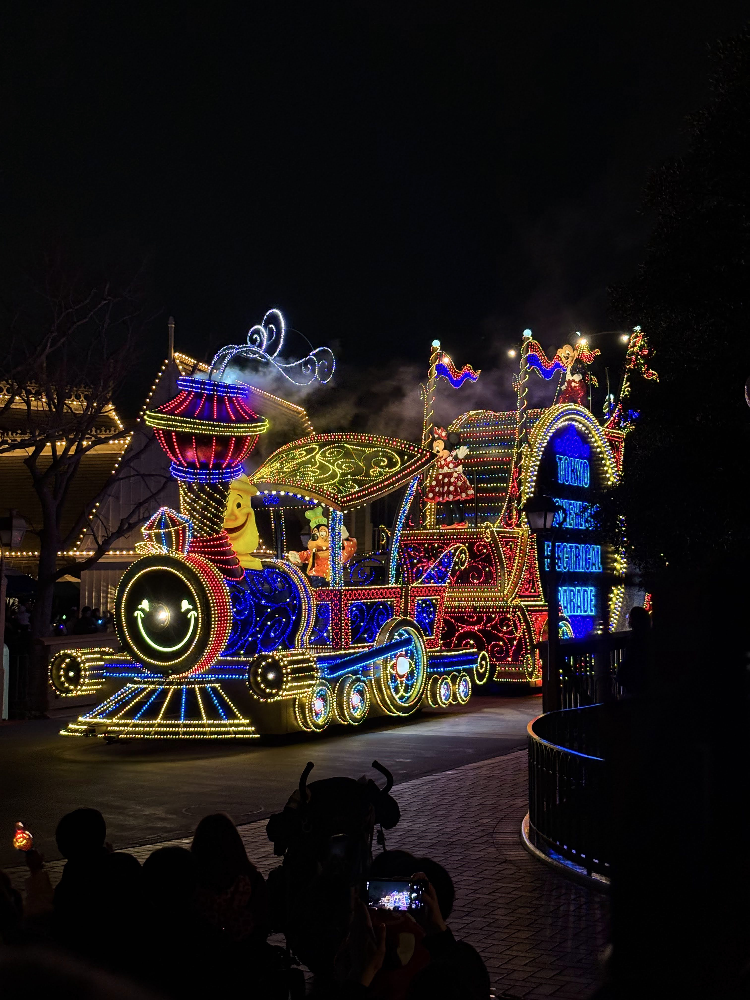

Tokyo Disneyland
Electrical Parade
漆黒の闇をキャンバスに変えた、夢の開拓者たちの温かな情熱の記録
I. From Water to Street
漆黒の湖畔から始まった、光の魔法の第一歩
夜の帳が下りる頃、どこか懐かしく胸を躍らせるおもちゃのような電子の音色とともに、きらめく光の海が私たちの目の前にやってきます。東京ディズニーランドの夜を象徴する「エレクトリカルパレード」。その魔法の第一歩は、1971年の秋、フロリダの澄んだ湖の上にありました。
当時エンターテイメントの責任者だったボブ・ジャニは、広大な敷地を包み込む、完全な闇に沈んだ湖畔をじっと見つめ、これを夜間スペクタクルショーの理想的な舞台として見出しました。こうして誕生したのが、水面に浮かぶスクリーンが幻想的な光を放ちながら進む『エレクトリカル・ウォーター・ページェント』です。このショーの爆発的な成功に心を動かされたイマジニアたちは、「この魔法を、今度はアナハイムの陸上のストリートで再現しよう」という、前代未聞の挑戦に乗り出すことになります。
当時、夜間のパーク演出といえば簡素なイルミネーションや花火が主流であり、自律走行するフロート群がルートを巡る「夜間パレード」自体が極めて革新的なものでした。特に、暗闇を克服すべき障害ではなく、光を引き立たせるための演出上のキャンバスとして積極的に利用するという発想の先進性は、ディズニーエンターテインメント史における偉大な転換点であったと言われています。

開発チームの闘いと、光の案内役「ブルーフェアリー」
しかし、その挑戦は決して平坦な道ではありませんでした。外部に委託したフロートの製作は大幅に遅れ、お披露目のわずか2ヶ月前に、半分しか完成していない状態で届くという最大の危機を迎えます。
プロジェクトディレクターのロン・ミジカーを筆頭とするイマジニアたちは即座に立ち上がり、バックステージに臨時の作業場を設営。溶接工や電気技術者たちが寝食を忘れて突貫工事を進めました。初期リハーサルではフロートの接触事故や電気系統のトラブルが相次ぎ、開発チームは対応に追われる日々を過ごしましたが、彼らは誰一人として諦めませんでした。その執念が実を結び、1972年6月17日、ストリートはまばゆい光に満ち溢れ、伝説の初演を迎えたのです。
この初期のパレードにおいて、大半のフロートは手押しまたは牽引式の平面スクリーン構造が主流でしたが、唯一「3次元の立体造形」として丁寧に設計されていたのが、パレードを先導する光の案内役「ブルーフェアリー」でした。ピノキオに「本物の人間になりたい」という夢を叶えた彼女を先頭に配置することは、信じる心があれば夢は必ず叶うというウォルト・ディズニーの思想を体現し、ゲストを現実から夢の世界へと優しくエスコートする役割を持たせるという、演出上の美しい意図に基づいていると考えられています。
| 開発の歩み | 夢を形にするための丁寧なアプローチ |
|---|---|
| 1. 物語の紡ぎだし | キャラクターの魅力を引き出し、光で語るべき最も美しいシーンを構想。 |
| 2. スタジオとの対話 | アニメーターたちと密に連携し、二次元の躍動感をそのまま立体へ息づかせる。 |
| 3. 光と色彩の設計 | 小さな光の一粒一粒が、闇の中で最も美しく温かく見える位置を決定。 |
| 4. 遮光の工夫 | 反対側の観客席から電球の裏側や骨組みが透けて見えないよう、特殊な布地を選定。 |
| 5. クレイモデルによる試作 | 粘土を用いて精密な立体模型を作り、金属職人に渡すための温かなフォルムを確かめる。 |
| 6. 金属の骨組みの溶接 | 試作したフォルムをもとに、強固な金属フレームを職人の手で一本ずつ溶接。 |
| 7. 手作業による配線 | 張り巡らせた布地の上に、一本一本、電球の温かな配線を施す。 |
II. Warm Light & Harmony
電球ひとつに心を込めた、イマジニアの温かな工夫
ゲストの瞳にきらめく光を届けるため、イマジニアたちは驚くほど細やかで温かな工夫を積み重ねてきました。
かつてのパレードでは、走行する車体の上でこれほど多くの電球を灯し続けることは不可能とされていました。そこで彼らは、スタジオの特殊撮影用として開発されたコンパクトでパワフルな「ニッケル・カドミウム蓄電池」を応用し、フロート自体が自律して輝き続けられる仕組みを考案したのです。
さらに、初期のパレードに使われた約50万個の小さな電球は、ただ配置されたわけではありません。当時は多様な着色電球やカラーフィルターなどを応用しながら、独特の温かみある色彩を作り上げていたとされています。この細やかな手仕事の温もりこそが、冷たい電気の光をぬくもりある魔法の光へと変えた瞬間でした。
現在のドリームライツでは、LEDや光ファイバーへの移行によって電球の数は100万個を超えましたが、そのひとつひとつが「どの角度から、どの距離で見ても美しく見えるか」を徹底的に検証されて配置されています。技術は進化しても、光で人を幸せにしたいというイマジニアの哲学は、初演の夜からしっかりと受け継がれています。

目の前の世界と音楽が完璧に溶け合う「ゾーン音響」
もう一つの素晴らしい工夫が、音響の仕掛けです。パレードルートを歩く時、自分の目の前にやってきたフロートに合わせて、まるで魔法のように周囲のスピーカーから流れる曲がそのキャラクターのテーマへと切り替わることに気づいたことはあるでしょうか。
イマジニアたちは、パレードルートを細かなエリア（トリガーゾーン）に分割し、フロートがその境界を越えた瞬間、地中に埋め込まれたセンサーが反応して、エリア全体の固定スピーカーへ「いま、この音楽を流して」という信号を送る独自の音響システムを開発しました。これにより、フロートが途中で一時停止したり、前後の間隔が変わったりしても音響がずれることなく、いつでも目の前の世界に完璧に没入できます。
この仕掛けにより、ゲストがパレードルートのどこに立っていても、目の前を通過するストーリーと音楽が完璧なシンクロを見せ、どの鑑賞エリアであっても高いクオリティの魔法を等しく体験できるよう、細やかな設計上の配慮が地中に埋め込まれています。
III. The Electronic Symphony
小さなトイ・サウンドから、壮大な交響楽への奇跡
誰もが自然と口ずさみ、思わずステップを踏んでしまうあの名テーマ曲「バロック・ホウダウン（Baroque Hoedown）」。実は、この曲はディズニーがパレードのために書き下ろしたオリジナル曲ではありません。1967年、フランスの電子音楽パイオニアであるジャン＝ジャック・ペリーとゲルション・キングスレイが、発売されたばかりの初期シンセサイザー（モーグ）を使ってレコーディングした、おもちゃのように無邪気で楽しげな一曲でした。
この楽曲は、商業的なモーグ・シンセサイザーの極めて初期の録音例、すなわち電子音楽黎明期を象徴する作品であり、その軽快な電子音はまさに当時のデジタル新時代の到来を象徴するものでした。当初はクラシックなオーケストラ演奏を検討していたボブ・ジャニでしたが、ジャック・ワーグナーがこの楽曲を音楽チームに紹介したことが採用のきっかけになったとされています。1977年にはドン・ドーシーが新たに編曲を担当し、格式高いファンファーレや、ボコーダーを用いた電子ボイス、各ディズニー作品のメロディを散りばめた、不朽のシンセサイザー・アレンジメントが確立されました。
「バロック・ホウダウン」という曲名には、17世紀のバロック音楽様式と、アメリカ南部の陽気なダンス音楽「ホウダウン」という、一見まったく相容れないふたつの要素が込められています。この格式と遊び心、伝統と革新の絶妙なバランスが、電子音楽史とディズニーパーク音楽史が交差する瞬間を鮮やかに表現しています。
そして時が流れ、東京ディズニーランドの「ドリームライツ」へと受け継がれる際、この楽しげな電子音の背景に、各ディズニー映画の物語を繊細かつドラマチックに描き出す「フルオーケストラ」の豊かな響きが重ね合わされました。電子音の持つどこか無邪気なワクワク感と、交響楽が織りなす重厚な美しさが美しく溶け合うハイブリッド編曲により、東京独自の高い芸術性を備えたエンターテインメントへと昇華されたのです。

IV. Dreamlights Revolution
光の第二世代革命 ― 2001年、電子的リアリズムによる「再創造」
2001年6月1日、東京ディズニーランドの夜に「エレクトリカルパレード・ドリームライツ」が登場した瞬間、夜間エンターテインメントは単なるリニューアルを超えた「再創造」を果たすことになりました。
技術的な最大の革命は、従来の白熱電球から、高輝度・省電力の「超高輝度LED」や「光ファイバー」技術への全面的な移行でした。これにより、これまで表現が難しかった無段階の調光や、繊細なカラーグラデーション、さらにキャラクターの動きや音楽の周波数に完璧に同調して流動的に光が波打つ、極めて洗練されたアニメーション表現が可能となりました。ジーニーのフロートにおける緻密な変色（ピクセルマッピング）や、ラプンツェルの長い髪が音楽と連動して流れる演出などは、この新光源の特性を極限まで引き出したイマジニアたちの執念の証でもあります。
音楽面では、編曲家グレゴリー・スミスが「バロック・ホウダウン」が持つ原曲のトイ・サウンドの愛らしさを維持しつつ、背後に重厚なフルオーケストラ演奏を重ね合わせる編曲手法を導入。電子音の持つ無邪気な躍動感と、映画の情感を引き出すシンフォニックな美しさが美しく溶け合うハイブリッド編曲により、夜のパレードはまるで一篇の壮大なデジタル・シンフォニーへと昇華されたのです。
V. The Bridge Between Two Nights
光と闇、炎がつないだ夜の幻想
東京ディズニーランドにおける夜の魔法を語る上で、1995年から2001年にかけて公演された伝説のパレード『ディズニー・ファンティリュージョン！』の存在を外すことはできません。初代エレクトリカルパレードの終了に伴い、夜間エンターテインメント史を繋ぐ極めて重要な架け橋となった作品です。
最大の特徴は、それまでの「通り過ぎる光」から、パレードが途中で停止して繰り広げられる「ドラマチックな変身のショーモード」への挑戦でした。光をまばゆく放つだけでなく、特殊効果による「炎」や「煙」、そして一時的な消灯による「遮光（完全な闇）」を効果的に配置することで、ディズニーヴィランズが支配する恐ろしくも美しい世界を体現しました。
『ファンタズミック！』の制作でも名高いブルース・ヒーリー氏が手がけた本作の音楽は、重厚なオーケストラ、ダークファンタジーの色彩、善と悪の対立をドラマティックに描く構成など、後のディズニーを象徴するナイトエンターテインメントと高い次元で共通する特徴を持っています。
また、この傑作は東京版のみにとどまらず、後にディズニーランド・パリにおいて『Disney's Fantillusion』として逆輸出されて公演され、欧州のファンからも極めて高い評価を獲得しました。まさに、東京発のエンターテインメント技術が世界へと還元された歴史的な事例でもあります。
夜間パレードの進化を辿ると、以下の美しい変遷が浮かび上がります。
2. Fantillusion —— 「光と闇の物語を描く」時代（停止ショー、遮光、炎のドラマ）
3. Dreamlights —— 「光そのものが演技する」時代（LEDとオーケストラによる感情表現の極致）
VI. Tokyo's Unique Resonance
世界で最後まで愛され続ける、きらめきの航路
エレクトリカルパレードの系譜は、アナハイム（カリフォルニア）、フロリダ、そしてパリの各地で惜しまれつつも終了を迎えました。現在、このパレードの輝きをレギュラー公演として恒常的に目撃できるのは、世界で東京ディズニーランドの「ドリームライツ」のみとなっています。
なぜ東京版はこれほど長きにわたり愛され、公演され続けているのでしょうか。そこには、日本独自の「パレード鑑賞文化」が密接に関わっていると考えられています。日本では、パレード開始の数時間前から場所を確保する「長時間待機文化」や、お気に入りの場所から大切に見届ける「定点鑑賞文化」、さらに「写真撮影への高い熱量」など、ゲスト側の非常に真摯な受容スタイルが存在します。これに呼応するように、フロートはどの位置から見ても、またカメラのレンズを通しても完璧に美しく調和するよう、極めて精密な角度計算を施されて運行されてきました。
そして、1985年の東京上陸から40年以上の歳月が流れた今、パレードルートでは微笑ましい「世代交代のループ」が起きていると言われています。
かつて小さな子供として、親の温かな手をしっかりとつかみながら、キラキラと輝くミッキーたちの姿を見上げていた少年少女たち。時の流れの中で彼らは大人になり、今度は自分たちが「親」となって、小さな我が子を連れて同じパレードルートに立っています。
「ほら、ミッキーだよ。パパもママも、子供のころにこうして見ていたんだよ」
そう語りかける言葉と、それを見上げる子供の笑顔。世代から世代へと受け継がれていくこの温かなつながりこそ、ドリームライツが単なる照明技術の集合体ではなく、幾千もの家族が重ねてきた幸せな「時間の記憶」そのものであることを象徴しているのかもしれません。

VII. Shimmering Rainy Night
雨空に現れた、切なくも美しいもう一つの奇跡
どんなに楽しみにしていた日でも、空からポツリポツリと雨が降り出すと、少し寂しい気持ちになってしまうもの。しかし、かつての東京ディズニーランドには、雨の日の夜だからこそ出逢える、息をのむほどに美しく幻想的なもう一つの魔法がありました。それが、雨天限定のミニパレード『ナイトフォール・グロウ』です。
ドリームライツが天候によって休演となった雨の夜、「雨の日こそ、おしゃれを楽しみたい！」というミニーマウスやデイジーダックたちが、水滴をまるで宝石のようにきらめかせながらトゥーンタウンの奥から現れます。
このパレードには、ファンの心を強く惹きつける特別な仕掛けがありました。通常のパレードとは進行方向が異なる「逆回りのパレードルート（トゥーンタウン出発）」で運行されること、そしてキャラクターたちのセリフや紡ぎ出す言葉がすべて、いつもの日本語ではなく、どこか異国情緒を感じさせる「英語」であったことです。
「Tonight is a magical night — even in the rain!」——そう朗らかに呼びかけるミニーの声が、ひんやりとした雨の空気の中に透き通るように広がるとき、パレードルートはまるで異国の小さな街角に変わります。英語のささやきと、濡れた路面に万華鏡のように美しくにじみ、反射するフロートの淡い色彩。傘越しに見上げる光は、晴れの夜とはまったく異なる、儚く繊細な美しさを帯びていました。
かつてコロナ禍によるエンターテインメント休止期には、晴れの日の夕暮れ時にも特別に運行され、夜のパークに希望の灯りをともし続けました。困難な日々の中で、心に少しでも光を届けたいと願うキャストやスタッフたちの熱い想いが、あの静かな運行には込められていたと言われています。
多くのゲストに愛された『ナイトフォール・グロウ』ですが、惜しまれつつも2026年3月31日をもってすべての公演を終了し、静かに伝説の幕を閉じました。しかし今でも雨が降る夜、ルートを見つめると、あの切なくも愛おしい光と英語のメロディが、私たちの胸に優しく蘇るのです。
雨に濡れた路面に映り込む光は、晴れの夜には決して見えない景色だった。
あの夜だけが、あの場所だけが持っていた魔法——それを知っている人が、今もどこかにいる。
VIII. Global Night Processions
国境を越え、世界の街を魔法に染めたニューヨークの夜
この光のパレードは、ある時はパリの運河の岸辺を照らし、ある時はアナハイムのノスタルジックなストリートを進み、パークの境界線すら越えて世界を旅してきました。
その中で最も奇跡的でロマンチックな出来事として語り継がれているのが、1997年6月14日の夜のことです。なんと、あの大都会ニューヨークの「ブロードウェイ」の主要なストリートを完全に通行止めにし、タイムズスクエアのど真ん中を、光のフロートたちがゆっくりと練り歩くという夢のような屋外スペクタクルが実現したのです。
普段は忙しなくクラクションが鳴り響く大都会の摩天楼が、この夜だけはバロック・ホウダウンの優しい音色と色鮮やかな魔法に優しく包み込まれました。沿道を埋め尽くした大人も子供も、その美しい光景を前に、誰もが年齢や国境を忘れ、純粋な子供のようなときめき（Sense of Wonder）を瞳に宿して見つめていました。
「この場所は、世界に想像力がある限り、永遠に完成することはない」。ウォルトが残したその言葉の通り、着色電球とカラーフィルターを活用したあの日のぬくもりから、最新のLEDで表現される現代の光の物語まで、ゲストを喜ばせたいと願うイマジニアたちの愛と工夫がある限り、このまばゆい光の航路は、これからも私たちの心に温かな希望を灯し続けていくのです。
IX. Light Trivia / Electrical Facts
夜間パレードを紐解く詳細データ
半世紀にわたって進化を続けてきたディズニーの夜のシンボル。その歴史的な変遷と主要な事実を一覧で振り返ります。
| 歴史的出来事・項目 | 詳細と変遷の記録 |
|---|---|
| 世界初演 | 1972年6月17日（アナハイム・ディズニーランド） |
| 東京ディズニーランド上陸 | 1985年3月9日（初代「東京ディズニーランド・エレクトリカルパレード」） |
| ドリームライツ開始 | 2001年6月1日 |
| 使用光源の変遷 | 白熱ミニチュア電球（着色電球、カラーフィルター等）→ 高輝度LED、光ファイバー、LEDピクセルマッピング、液晶パネル内蔵 |
| 音楽アレンジの変遷 |
1. 1972年〜 純電子音ループアレンジ（編曲：ポール・ビーバー） 2. 1977年〜 ドン・ドーシーによるシンセサイザー・オープニング編曲 3. 2001年〜 グレゴリー・スミスによるオーケストラ＆電子音ハイブリッド編曲 |
| フロート数推移 | 約20基（初代東京ディズニーランド版）→ 約26基〜（ドリームライツ。複数回のリニューアルにより増減・入れ替えあり） |
| ニューヨーク公演 | 1997年6月14日（映画『ヘラクレス』公開記念としてブロードウェイを封鎖し運行。1991年にはパリ開園準備としてWDWからアセットの移送を経験） |
| 雨の日限定パレード | 『ナイトフォール・グロウ』（2011年5月9日運行開始 〜 2026年3月31日公演終了） |
The Architects of Light
暗闇を最大のエンターテインメントへと変え、光の交響楽を紡ぎ出した4人の先駆者たち。各肖像をタップすることで、彼らの開発への情熱と温かなこだわりを垣間見ることができます。
Archive Sources
[ Open Library ]
Official Sources
- Disney Parks & Resorts Historical Release Documents
- D23 — The Official Disney Fan Club Archives
- Walt Disney Imagineering Technical & Design Briefs
Tokyo Disney Resort
- 東京ディズニーリゾート公式プレスリリース（2001年 - 2026年）
- 株式会社オリエンタルランド公開資料・年次報告書
Historical Archives
- Disney History Institute Collection Records
- The Walt Disney Family Museum Archival Exhibits
Music Archives
- Jean-Jacques Perrey & Gershon Kingsley "Kaleidoscopic Vibrations" (1967) Album Documentation
- The Bob Moog Foundation Synthesizer History Records
Additional Research
- ディズニーエンターテインメント・クリエイターインタビュー（ドン・ドーシー、グレゴリー・スミス対談集）
- 世界各パーク現地のパンフレット、ガイドブック、ショースケジュール資料（1972年 - 2026年）